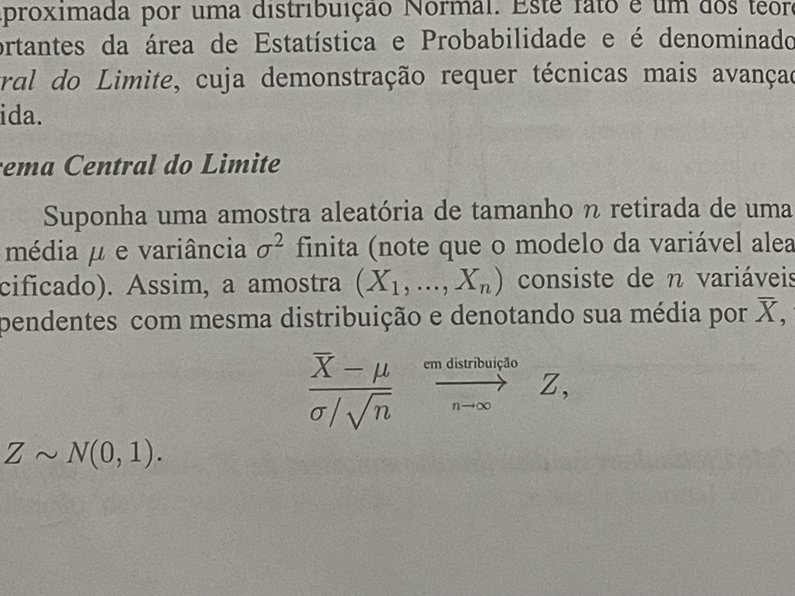
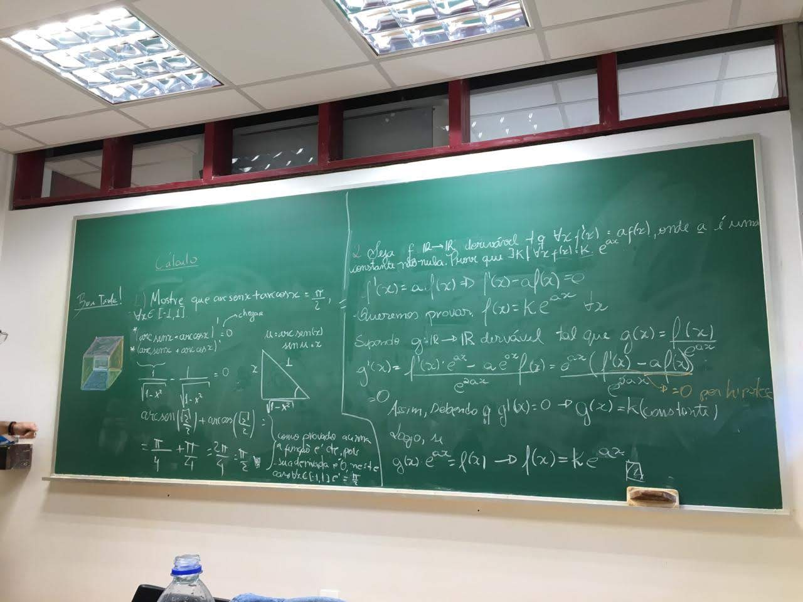
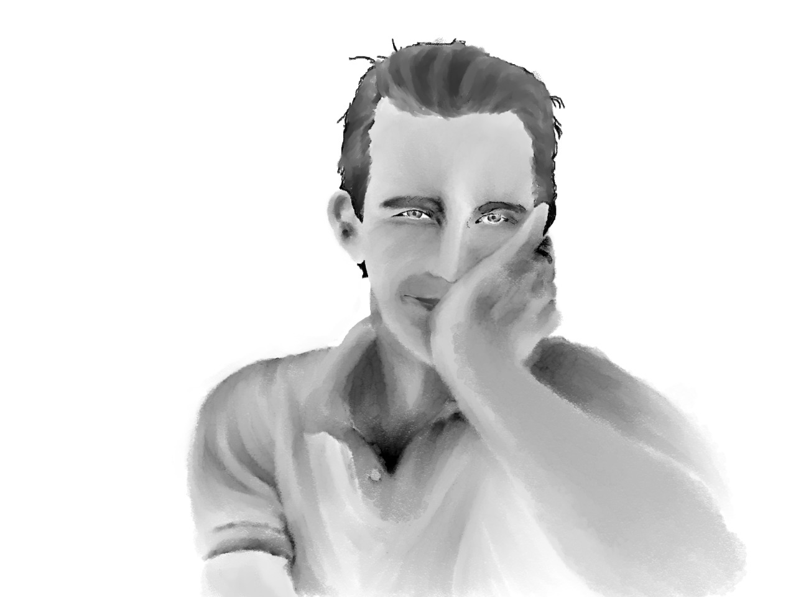
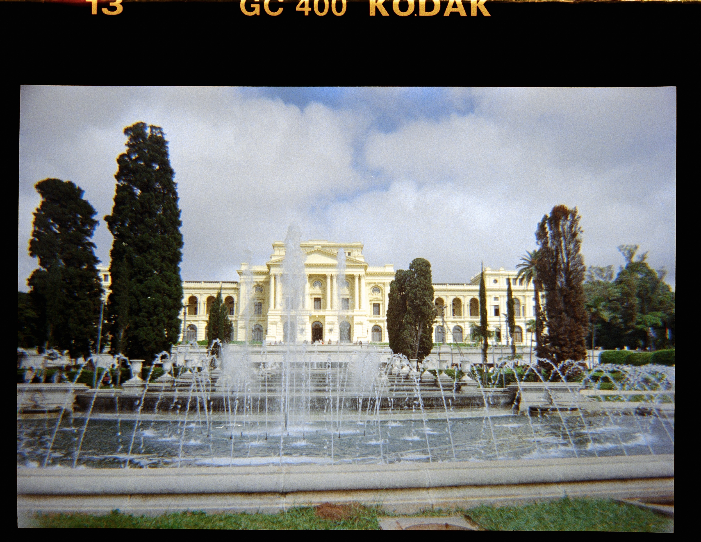
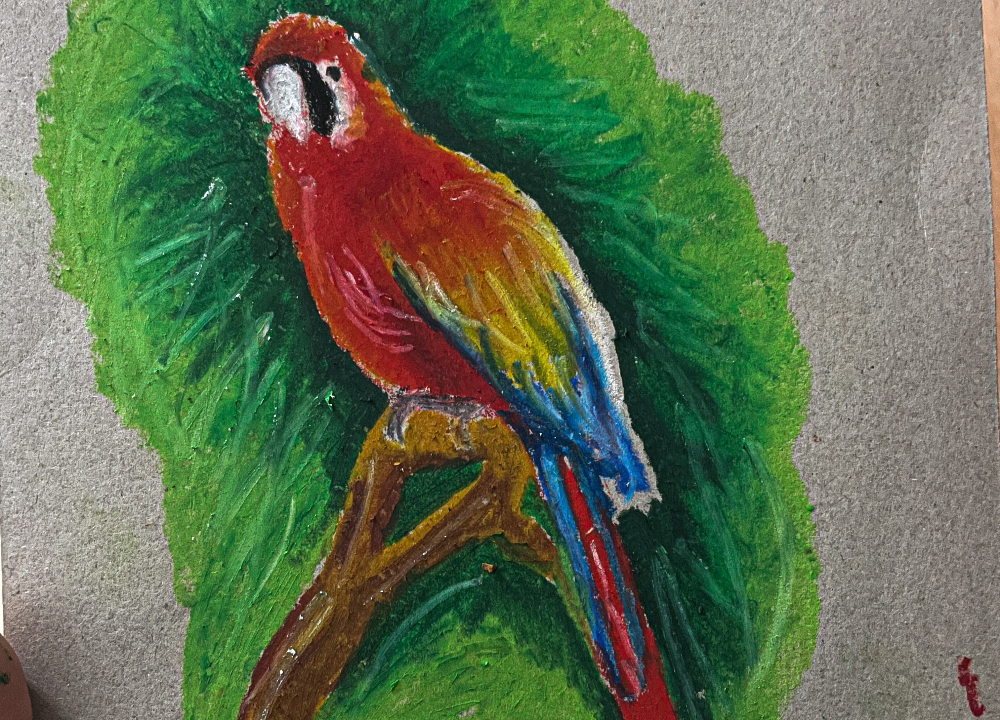

Sou formada em matemática pela USP, onde fui orientanda em iniciações científicas durante toda a graduação. Atualmente trabalho no mercado financeiro com Risco de Crédito. Minha sede de conhecimento, aliada à responsabilidade e dedicação, são diferenciais que marcam meu perfil como analítico, com domínio em diversas áreas. Gosto muito de descobrir coisas novas e estes são alguns dos meus interesses:
Álgebra linear, análise real
Desenhos realistas, abstratos e com diferentes técnicas
Violão, ukulele, piano
Diversos gêneros, uma mesma canção em diferentes línguas
Fotografia analógica
De Dostoievski a Saramago





Atuo como analista de Risco de Crédito desde 2022, tendo feito parte dos times de Abertura de Contas, Pós-Abertura e Gestão de Limites. Desenvolvi diversas políticas de crédito com foco em cenários diversos: expansão, prospecção, retenção e otimizações.
Vejo muita similaridade entre a matemática e o mercado financeiro, e isso vai além dos números. Consigo aplicar diversos conceitos de lógica no meu dia a dia, que trazem impacto real para o negócio. Fui finalista e campeã em premiações da VP (Risk Expert), destaque em entregas da Diretoria e participante ativa de diversas discussões sobre diferentes temas relacionados a crédito.
Se você não sabe o que é estatística ou matemática, nada melhor do que visitar o Instituto de Matemática e Estatística da USP (IME-USP). É um privilégio termos no Brasil um local com tantos bons professores. Torna-se fácil se apaixonar por qualquer tópico.
Tema que recomendo discutir com profissionais da área ou frequentar aulas da FEA-USP.